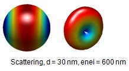
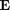
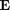

Plane wave excitation
Plane wave excitations of metallic nanoparticles allow to compute scattering, extinction, and absorption cross sections.
Contents
Initialization
% initialize PLANEWAVE object exc = planewave( pol, dir, op ); % pass additional arguments exc = planewave( pol, dir, op, PropertyName, PropertyValue );
In the initialization, the following parameters and additional properties are used
- pol is the light polarization, several polarizations can be computed by providing an array [pol1;pol2;...].
- dir is the light propagation direction, several directions can be computed by providing an array [dir1;dir2;...] of same size as pol. For quasistatic simulations the dir argument can be also omitted.
- op is the option structure for the MNPBEM simulations.
- 'medium' selects a medium through which the particle is excited. By default the embedding medium corresponding to the first argument of the eps cell of comparticle objects is taken.
- 'pinfty' provides a user-defined unit-sphere discretization for the computation of the electromagnetic fields at infinity.
planewave is a wrapper function that selects from the options and property settings one of several classes.
Methods
Once the planewave excitation is initialized, one can compute the excitation potentials at the boundary of a comparticle object at a given wavelength enei according to
% compute excitation potentials at the boundary of particle P pot = exc( p, enei ); % one can also directly use them in the call to a BEM solver sig = bem \ exc( p, enei );
In addition to excitations, planewave also allows to compute the various cross sections according to
% compute scattering, extinction, and absorption cross section
sca = exc.sca( sig );
ext = exc.ext( sig );
abe = exc.abs( sig );
For retarded simulations, the calling sequence [sca,dsca]=exc.sca(sig) returns both the total cross sections (for the different polarizations and propagation directions) and the corresponding differential cross sections. The values are given on the unit sphere defined through pinfty. The differential cross sections (here for the first polarization) can be plotted with
% compute total and differential cross section [ sca, dsca ] = exc.sca( sig ); % plot differential scattering cross section plot( dsca.p, dsca.dsca ); % plot differential cross section for deformed sphere plot( trispherescale( pinfty, dsca( :, 1 ), 1 ), dsca( :, 1 ) );

Implementation
In the quasistatic simulations, the cross sections are computed from the induced dipole moments of the nanoparticle

where  denotes the different polarizations
denotes the different polarizations  . In the retarded simulations the pertinent equations are
. In the retarded simulations the pertinent equations are

where  is the refractive index of the embedding medium, ,
is the refractive index of the embedding medium, ,  are the scattered electromagnetic fields, and
are the scattered electromagnetic fields, and  ,
,  are the incoming electromagnetic fields of the plane-wave excitation. The integration extends over the (detector) surface defined through pinfty. For the calculation of the extinction cross sections, we employ the optical theorem.
are the incoming electromagnetic fields of the plane-wave excitation. The integration extends over the (detector) surface defined through pinfty. For the calculation of the extinction cross sections, we employ the optical theorem.
For substrates or layer structures, we have used the following literature to compute the extinction cross section:
- Lytle et al, Phys. Rev. E 71, 056610 (2005).
- Dahan and Greffet, Optics Express 20, A530 (2012).
In the toolbox the extinction cross section is computed according to

Here  are the electric fields of the reflected and transmitted plane wave excitation, and
are the electric fields of the reflected and transmitted plane wave excitation, and  are the scattered fields propagating in the directions of these waves.
are the scattered fields propagating in the directions of these waves.  is the wavenumber of the reflected (incoming) wave.
is the wavenumber of the reflected (incoming) wave.
For layer simulations, one can obtain the reflected and transmitted contributions also separately through
% reflected and transmitted extinction contribution ext1 = exc.ext( sig, 'refl' ); ext2 = exc.ext( sig, 'trans' );
At the moment we compute the absorption cross section as the differnce between extinction and scattering cross section. Note that for layer structures this approach is only valid for non-absorbing layer materials.
Examples
We first show how to compute a scattering cross section for a nanosphere
% options for BEM simulation op = bemoptions( 'sim', 'ret' ); % initialize nanosphere p = comparticle( { epsconst( 1 ), epstable( 'gold.dat' ) }, { trisphere( 144, 10 ) }, [ 2, 1 ], 1, op ); % set up BEM solver bem = bemsolver( p, op ); % plane wave excitation exc = planewave( [ 1, 0, 0; 0, 1, 0 ], [ 0, 0, 1; 0, 0, 1 ], op ); % light wavelength in vacuum enei = linspace( 400, 700, 80 ); % allocate scattering cross section sca = zeros( length( enei ), 2 ); % loop over wavelengths for ien = 1 : length( enei ) % surface charge sig = bem \ exc( p, enei( ien ) ); % scattering cross section sca( ien, : ) = exc.sca( sig ); end % final plot plot( enei, sca, 'o-' ); hold on; xlabel( 'Wavelength (nm)' ); ylabel( 'Scattering cross section (nm^2)' );
To plot the differential cross section at a wavelength of 600 nm, we proceed as follows
% surface charge sig = bem \ exc( p, 600 ); % scattering cross section [ sca, dsca ] = exc.sca( sig ); % compute differential cross section plot( trispherescale( dsca.p, dsca.dsca( :, 1 ), 1 ), dsca.dsca( :, 1 ) );
Copyright 2017 Ulrich Hohenester